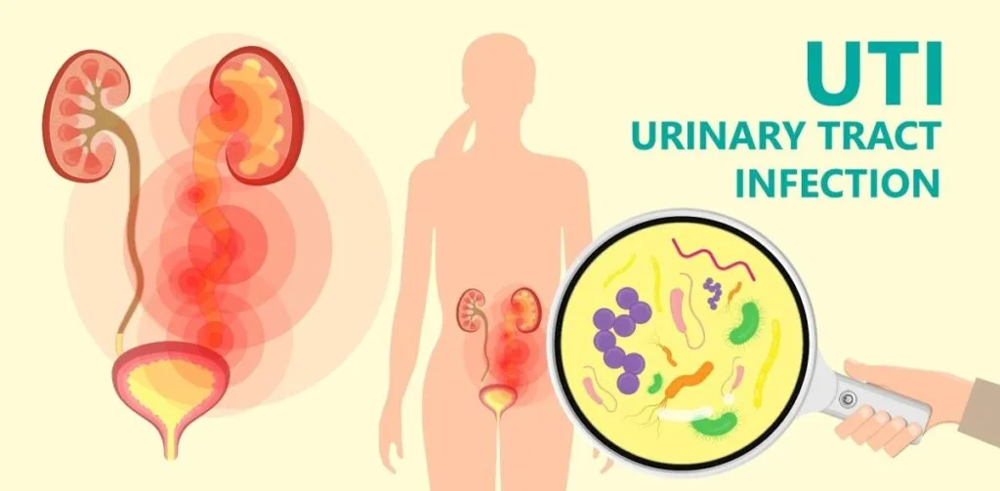
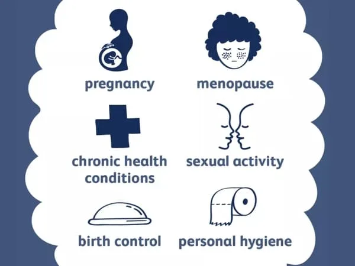
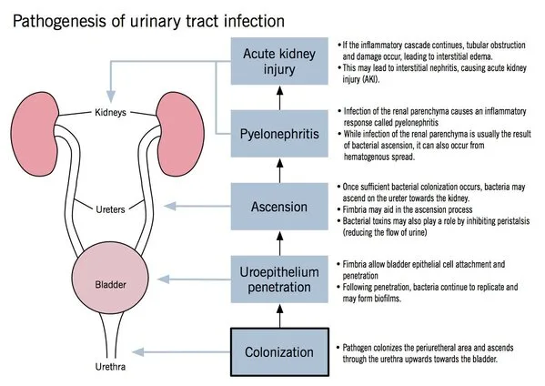
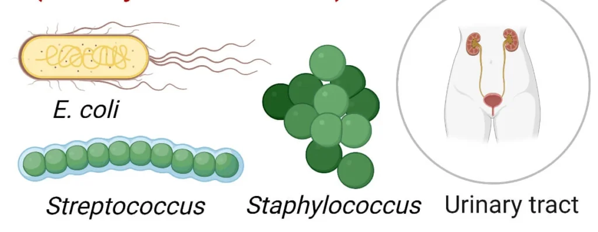
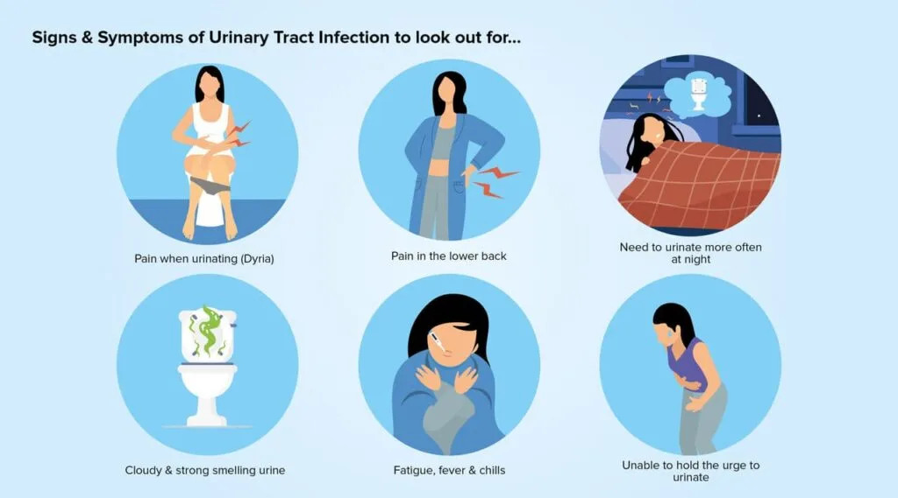
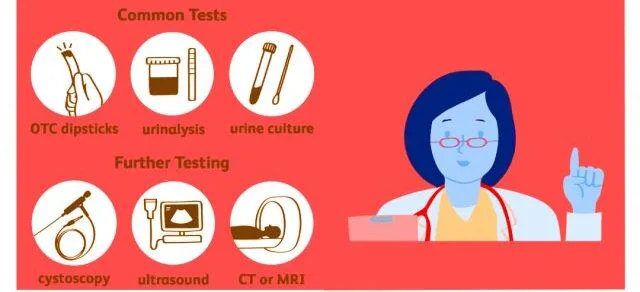
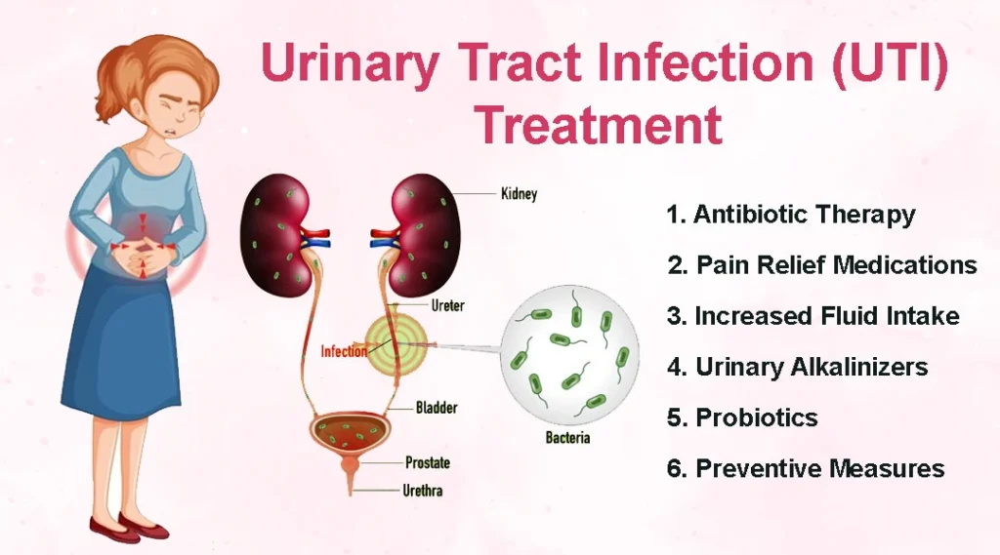

Expanded Nursing Uganda Explanation
Urinary Tract Infections should be reviewed through safe maternal and newborn assessment, early recognition of danger signs, respectful communication and timely referral. Connect the definition to vital signs, bleeding, fetal or newborn wellbeing, patient education and local protocol requirements.
Contents, 22 sections (tap to expand)
01 COMMON TERMS IN URINARY SYSTEM
- Proteinuria : Daily excretion of proteins in the urine is more than 150mg. It signifies that the kidney is damaged/ perforated.
- Haematuria : Means passing urine containing blood and is due to bleeding into the urinary tract.
- Crystalluria : Presence of crystals like oxalates, phosphates in the urine detected by microscopic examination of urine
- Glycosuria : Means presence of sugar (glucose) in urine either due to diabetes mellitus or due to renal glycosuria
- Azotemia : Increase in the serum concentration of urea and creatinine above their normal values. This occurs when glomerular filtration pressure (GFR) of the kidneys falls due to renal failure. “uremia”.
- Oliguria : Diminished urine volume output of urine i.e. 100 mL to 400 mL per day.
- Anuria – Complete absence of urine formation i.e zero to 100 mL per day
- Dysuria – Difficulty or pain in passing urine
- Polyuria – Urine volume above 3 litres per day
- Retention of urine – occurs due to obstruction of urine outflow from the bladder, this is relieved by catheterization
02 Anatomy of the Renal System
The urinary system is the main excretory system eliminating waste products from blood through urine. Its anatomy consists of two kidneys , each joined to the bladder by the tube called ureter , which conveys urine from the kidneys to the bladder for storage. Following bladder contraction, urine is expelled through the urethra .
There are two kidneys which lie behind the peritoneum on either side of the vertebral column. In adults, they measure approximately 12 to 14 cm.
The urine is formed in the kidney by the nephrons.
Each kidney has approximately one million nephrons.
****
Role of the Kidneys
• Influence blood pressure control
• Release renin to activate the renin-angiotensin system
• Can lead to water retention or excretion
• Waste excretion(Urea, Creatinine, Uric Acid)
• Blood filtration
• Blood glucose regulation(glucose absorption)
• Acid Base Balance/ pH regulation
• Electrolyte balance (Sodium, Potassium, Chloride)
•Erythropoiesis regulation(also produces Erythropoietin)
It is made up of four layers i.e.
- Mucosa ; this is the innermost layer with rugae that allows its distention.
- Sub mucosa which provides rich vascular supply
- Smooth muscle layer/ detrusor muscle; which contracts during urination for urine expulsion.
- Serosa : a continuation of peritoneum
The bladder has a triangular area called trigone with three openings at its angles i.e two for ureters laterally and one for the urethra at the apex
URETHRA
This conveys urine from the urinary bladder to outside of the body.
The internal sphincter of smooth muscle and external urethral sphincter of skeletal muscles constricts the lumen of the urethra causing bladder to fill.
Female urethra is 4cm long and male urethra is 20 cm
This is a functional (urine) forming units of the kidneys ****
Components of the Nephron
- Bowman’s Capsule a cup-like structure made of squamous epithelium and inner layer has modified cell (podocytes) closely associated with glomerular capillaries
- Glomerulus made of highly permeable capillary network
- Proximal convoluted tubule , made of cuboidal epithelium with microvilli. It is a primary site of tubular reabsorption and secretion mechanisms.
- Loop of Henle, both ascending and descending loops are involved in urine concentration
- Distal Convoluted tubule ; this is shorter than the proximal and contains macula densa specialized sensory cells which monitor NaCl concentrations. it’s a site of tubular reabsorption and secretion
- Collecting Ducts ; these empty urine into the renal pyramids
03 Physiology of the urinary system
The volume of the urine excreted per day is about 1500m/s or roughly 1 ml /min . The processes responsible for urine formation are ultra filtration at the glomeruli and reabsorption in the tubules of the nephrons.
The kidneys are largely responsible for maintaining this constancy and the excretion of waste products of metabolism.
For example, urea which is a waste product of protein metabolism is excreted in a large quantity. Various renal functions are illustrated below
****
- Regulation of the water content of the body : About 2/3 of water filtered by the glomeruli is reabsorbed in the proximal tubules iso-osmotically. The remaining water is reabsorbed in distal tubules and collecting duct; under the influence of antidiuretic hormone (ADH).
- Regulation of normal acid-base balance of the blood . The kidneys help to maintain a normal internal environment by preventing body fluids from becoming too acidic or too alkaline.
- Regulation of electrolyte content of the body . A large part of sodium ions (Na+), chloride ions (Cl- ) are actively reabsorbed in the PCT, DCT and collecting ducts. The kidney regulates the fluid balance by excreting more urine when a large amount of urine is taken and retains fluid when much has been lost.
- Hormonal and metabolic functions . The kidney produces many hormones which take part in various metabolic functions > Renin is produced in the “Juxta glomerular apparatus” and stimulates aldosterone secretion.
- > Erythropoietin – stimulates red blood cells production
- > Prostaglandins produced in the kidneys help in vasodilation of blood vessels.
- Filtration
- Selective Reabsorption
- Tubular Secretion
Filtration takes place because there is a difference between the blood pressure in the glomerulus and the pressure of the filtrate in the glomerular capsule .
Because the afferent arteriole is narrower than the afferent arteriole , a capillary hydrostatic pressure builds up in the glomerulus. This pressure is opposed by the osmotic pressure of the blood, provided mainly by plasma proteins, and by filtrate hydrostatic pressure in the glomerular capsule,
The volume of filtrate formed by both kidneys each minute is called the glomerular filtration rate (GFR). In a healthy adult the GFR is about 125 ml/min , i.e. 180 liters of filtrate are formed each day by the two kidneys. Nearly all of the filtrate is later reabsorbed from the kidney tubules with less than 1%, i.e. 1 to 1.5 liters, excreted as urine. The differences in volume and concentration are due to selective reabsorption of some filtrate constituents and tubular secretion of others
SELECTIVE REABSORPTION
Most reabsorption from the filtrate back into the blood takes place in the proximal convoluted tubule , whose walls are lined with microvilli to increase surface area for absorption.
Materials essential to the body are reabsorbed here, including some water, electrolytes and organic nutrients such as glucose. Some reabsorption is passive, but some substances are transported actively. Only 60–70% of filtrate reaches the loop of the nephron.
Much of this, especially water, sodium and chloride, is reabsorbed in the loop, so only 15–20% of the original filtrate reaches the distal convoluted tubule, and the composition of the filtrate is now very different from its starting values. More electrolytes are reabsorbed here, especially sodium , so the filtrate entering the collecting ducts is actually quite dilute. The main function of the collecting ducts therefore is to reabsorb as much water as the body needs.
TUBULAR SECRETION
Filtration occurs as the blood flows through the glomerulus .
Substances not required and foreign materials , e.g. drugs including penicillin and aspirin, may not be cleared from the blood by filtration because of the short time it remains in the glomerulus.
Such substances are cleared by secretion from the peritubular capillaries into the convoluted tubules and excreted from the body in the urine.
Tubular secretion of hydrogen ions (H+) is important in maintaining normal blood pH.
04 Pyelonephritis in Pregnancy
Pyelonephritis is an infection of the kidneys, specifically affecting the renal pelvis and tubules .
It occurs in approximately 2% of pregnant women, particularly during the second trimester (16-26th week), with a higher incidence in first-time mothers (primigravidas).
It is more common in;
- Primigravidae than multiparae.
- Previous history of urinary tract infection increases the chance by 50%.
- Presence of asymptomatic bacteriuria increases the chance by 25%.
- Abnormality in the renal tract is found in about 25%.
There is an increased chance of urinary tract infections (UTIs) in females compared to males due to:
- Short urethra (4 cm) : The female urethra is significantly shorter than the male urethra, making it easier for bacteria to ascend from the external opening to the bladder.
- Close proximity of the external urethral meatus to areas (vulva and lower third of vagina) contaminated heavily with bacteria : The proximity of the urethra to areas harbouring a high concentration of bacteria increases the risk of contamination.
- Catheterization : The use of urinary catheters, often for medical reasons, can introduce bacteria into the bladder and increase the risk of infection.
- Sexual intercourse: Sexual intercourse can introduce bacteria into the urethra, particularly in women who are not properly lubricated.
05 Types of Infection:
- Ascending Infection : Bacteria ascend from the bladder or urethra, often originating from neighbouring organs like the rectum.
- Bloodborne Infection: Bacteria enter the bloodstream, often stemming from conditions like septicemia.
06 Causative Organisms for Pyelonephritis
- E. coli (70%) : The most common causative organism, usually originating from the gut.
- Klebsiella pneumoniae (10%).
- Enterobacter.
- Proteus.
- Pseudomonas.
- Staphylococcus aureus group.
07 Predisposing Causes
- Urinary Stasis : The growing uterus puts pressure on the ureters (tubes that carry urine from the kidneys to the bladder), causing them to dilate and kink. This creates areas where urine can pool, leading to stagnation and a favourable environment for bacterial growth.
- Loss of Urethral Tone : Pregnancy hormones relax smooth muscles throughout the body, including the muscles surrounding the urethra. This loss of tone can contribute to urine stagnation and increased risk of infection.
- Increased Vaginal Secretions : The increased production of vaginal discharge ( leukorrhea ) during pregnancy can introduce bacteria into the urethra, increasing the chances of infection.
- Prior History of Nephritis : Women who had acute nephritis (kidney inflammation) in childhood are more susceptible to developing pyelonephritis during pregnancy. This suggests a predisposition to kidney infections.
08 Signs and Symptoms
- Fever and Chills : A high fever (38-40°C) accompanied by chills is a common sign.
- Painful and Frequent Urination : The inflammation of the urethra causes pain and increased frequency of urination, often with a burning sensation.
- Tachycardia : An elevated heart rate (110-130 beats per minute or higher) is another typical sign.
- Vomiting : Nausea and vomiting are frequent symptoms.
- General Malaise : The patient may feel unwell with a coated tongue and overall weakness.
- Offensive Urine: The urine may have a strong, unpleasant odor due to the presence of bacteria.
- Epigastric Pain : Pain in the upper abdomen due to vomiting can also occur.
- Tenderness on Examination : The doctor may find tenderness when examining the renal angles (the areas where the kidneys are located) and the area above the pubic bone.
- Acute Aching Pain : A sharp, aching pain in the loins (lower back) is often felt, radiating to the groin and the costovertebral angle (the area where the ribs meet the spine).
- Tenderness on Palpation : The costovertebral angle is often tender when pressed upon.
- Urinary Symptoms : These include urgency (feeling like you need to urinate urgently), frequency (urinating more often than usual), dysuria (painful urination), and hematuria (blood in the urine).
- Fever and Flu-like Symptoms : The fever can be high and spiky (reaching 40°C), with chills and rigors (muscle spasms). This may be followed by hypothermia (low body temperature, around 34°C). Other flu-like symptoms include anorexia (loss of appetite), nausea , vomiting , and myalgias (muscle aches).
- Respiratory Distress: In severe cases, pyelonephritis can lead to respiratory distress and pulmonary edema (fluid in the lungs). This is due to endotoxin (a toxin released by bacteria) damaging the alveoli (tiny air sacs in the lungs). This is also known as Acute Respiratory Distress Syndrome (ARDS).
09 Diagnosis
A combination of factors aids in the diagnosis of pyelonephritis:
- History : The patient’s history of painful urination, fever, and other symptoms is crucial.
- Urinalysis : Examining the urine under a microscope reveals protein (from dead epithelial cells), sugar, and pus cells, all indicative of infection.
- Urine Culture and Sensitivity: A culture of the urine helps identify the specific bacteria causing the infection. This information is crucial for selecting the appropriate antibiotic treatment.
10 Effects on Pregnancy
- Increased Pregnancy Wastage : There is a higher risk of miscarriage or premature birth.
- Abortions : The infection can trigger premature labor and lead to a miscarriage.
- Premature Labor : Pyelonephritis can induce premature contractions and lead to early delivery.
- Intrauterine Fetal Death : In severe cases, the infection can cause the fetus to die in the womb.
- Small for Dates : The fetus may grow more slowly than expected due to the infection.
- Accidental Haemorrhage : The infection can weaken the cervix and make it more prone to bleeding.
- Anaemia : Pyelonephritis can contribute to anaemia due to the body’s response to infection.
- Hypertension : The infection can elevate blood pressure, posing a risk to both the mother and fetus.
- Septicemia and Septic Shock: The infection can spread to the bloodstream (septicemia), potentially leading to a life-threatening condition called septic shock.
- Renal Dysfunction: Pyelonephritis can damage the kidneys, leading to impaired kidney function.
11 ACUTE PYELONEPHRITIS
This is characterized by acute inflammation of the parenchyma (core substance of the kidney/kidney tissue) and the pelvis of the kidneys.
The disease may be bilateral or unilateral . This usually results from untreated bacterial cystitis and may be associated with pregnancy, trauma of the urinary bladder , and urinary obstruction Also Ascending and Descending infections.
Presentation ; flunk tenderness,
- fever, chills
- Dysuria
- Urgency
- frequency
Chronic pyelonephritis
This occurs due vesicoureteral reflux ( back flow of urine from the bladder to the ureters allowing spread of infection upwards to the kidneys. The condition is also called reflux nephropathy (This can lead to kidney distention called Hydronephrosis )
It clinical presents with
- bacteriuria,
- hypertension,
- flunk tenderness,
- septic shock,
- dizziness fainting and signs of renal insufficiency
12 Management/Treatment of Pyelonephritis in Pregnancy
Aims of management
The management of pyelonephritis in pregnancy focuses on treating the infection and preventing further complications:
****
A midwife is permitted to treat mild pyelonephritis . If the temperature is 38 o C or more, this won’t be mild, the patient must be transferred to hospital ****
Mild Pyelonephritis (Temperature Below 38°C):
Maternity Centre Management:
- Fluid Intake : Encourage the mother to drink plenty of fluids.
- Sulphadimidine : Administer sulphadimidine 2g stat, followed by 1g six-hourly for 5 days.
- Nitrofurantoin : Prescribe nitrofurantoin 100mg six-hourly for 1 week.
- Monitoring : Closely observe the patient’s progress. If no improvement is seen within 3 days, transfer to a hospital for further evaluation and management.
In hospital
- Admission : Immediate hospitalization is required for patients with a temperature of 38°C or higher.
- Bed Rest : Provide complete bed rest in a well-ventilated room.
- Positioning: Encourage the mother to lie on the unaffected side.
- Fluid Management : Ensure adequate fluid intake and monitor fluid balance closely.
- Intravenous Fluids : Intravenous fluids (crystalloid solutions) are administered to ensure adequate hydration.
- Monitoring : Urine output (greater than 60 ml/hour), temperature, and blood pressure are closely monitored
- Vital Signs : Monitor vital signs (temperature, pulse rate, respiration, blood pressure) every four hours.
- Blood Tests : Blood tests including a complete blood count (hemogram), serum electrolytes, and creatinine levels are performed to assess the patient’s health and kidney function.
- Urine Testing : Test urine for albumin daily.
- Dietary Management : As the patient improves, gradually introduce a light diet.
- Fever Control : Administer tepid sponging as needed to reduce fever.
- Constipation Management : Prescribe mild laxatives if constipation occurs.
- Keep strict fluid balance chart.
Medical Treatment: ****
- Antibiotic Therapy : Intravenous antibiotics are administered for 48 hours. Common choices include cephalosporins, aminoglycosides (gentamicin), Cefazolin, or Ceftriaxone. Once the culture results are available, the antibiotic may be switched to an oral therapy for another 10-14 days.
- Repeat Cultures: Urine cultures are repeated after 2 weeks of antibiotic therapy and at each trimester of pregnancy.
- Retreatment : If symptoms recur or the urine dipstick test for nitrate and leukocyte esterase is positive, a urine culture is repeated, and treatment is given if the culture is positive.
- Imaging Studies: If the patient does not respond to treatment, imaging studies like ultrasound, CT scan, or radiography may be required to rule out urinary tract obstruction.
- Antimicrobial Suppression Therapy : To prevent recurrence (which occurs in 30-40% of cases), antimicrobial suppression therapy may be continued until the end of pregnancy. Nitrofurantoin 100 mg daily at bedtime is an effective option. Cephalexin 250–500 mg orally every day for the remainder of pregnancy and continuing until 4–6 weeks postpartum is also recommended if nitrofurantoin is not available.
- Potassium Citrate : Prescribe potassium citrate 15 ml four-hourly to alkalinize the urine and potentially relieve pain.
- Fever Management: Acetaminophen (paracetamol) is given to reduce fever.
- Fluid Intake : There is a danger of crystallisation of these sulphur drugs to the kidneys if enough fluids are not given especially if the patient is vomiting so much, also watch for haematuria and oliguria.
13 Complications:
for the Mother: ****
- Sepsis : A severe and life-threatening condition where the infection spreads throughout the body.
- Kidney Damage : Repeated or untreated pyelonephritis can lead to long-term damage to the kidneys, potentially causing chronic kidney disease.
- Preterm Labor : The infection can trigger premature contractions and lead to premature birth, especially in the second and third trimesters.
- Low Birth Weight : Pyelonephritis can restrict fetal growth, leading to babies being born with low birth weight.
- Urinary Tract Obstruction : Infection can contribute to or worsen urinary tract blockages, making it harder to treat the infection.
- Acute Renal Failure : In rare cases, severe pyelonephritis can lead to kidney failure, requiring dialysis.
for the Fetus:
- Premature Birth : As mentioned above, premature delivery is a significant risk.
- Fetal Growth Restriction : The infection can hinder fetal growth and development.
- Stillbirth : In severe cases, pyelonephritis can increase the risk of stillbirth.
- Congenital Anomalies : While not fully established, some studies suggest a possible link between pyelonephritis in pregnancy and certain congenital anomalies in the baby.
14 CYSTITIS
Cystitis is a lower urinary infection involving inflammation of the urinary bladder.
Acute bacterial cystitis is common in women as the short urethra predisposes them to infection of the bladder.
It is defined as significant bacteriuria with associated bladder mucosal invasion presenting as urgency , frequency , dysuria , pyuria and haematuria without evidence of systemic illness.
Urine may be cloudy and malodorous and should be cultured. Has similar causative agents as asymptomatic bacteriuria- E.coli implicated in almost 80% of cases.
15 Causes of Cystitis
- Hormonal Changes : Pregnancy hormones, particularly oestrogen, can relax the bladder muscles and urethral sphincter, making it easier for bacteria to enter the bladder.
- Urinary Tract Obstruction: The growing uterus can compress the ureters, the tubes that carry urine from the kidneys to the bladder, causing urine to back up and increasing the risk of infection.
- Increased Urinary Frequency: Pregnancy often leads to increased urine frequency, which can flush out bacteria less effectively, increasing the risk of infection.
- Immune System Suppression : The body’s immune system is naturally suppressed during pregnancy to protect the fetus. This suppression can make it easier for bacteria to grow and cause infection.
- Changes in Urinary Flow: The growing uterus can compress the bladder, making it difficult to empty completely. This can leave residual urine in the bladder, providing a breeding ground for bacteria.
- Sexual Activity: While not always the case, sexual activity can introduce bacteria into the urethra, increasing the risk of infection.
- Previous UTIs: Having a history of UTIs increases the risk of developing cystitis during pregnancy.
- Bladder Incompetence: This can happen during pregnancy due to hormonal changes, and is a major contributor to cystitis.
- Ascending infections : This is a primary cause of cystitis, both in pregnancy and generally, due to bacteria traveling up the urinary tract.
16 Signs and symptoms
- Frequent Urination : Feel the urge to urinate more often than usual, even if you haven’t consumed much fluid. It’s common in pregnancy anyway, but the urge may be particularly strong and urgent with cystitis.
- Painful Urination (Dysuria) : A burning or stinging sensation during urination is a hallmark symptom. This can be especially uncomfortable during pregnancy, as the bladder may be more sensitive.
- Urgency : A strong, sudden urge to urinate that’s difficult to ignore. This can be exacerbated by the pressure of the growing uterus on the bladder.
- Pelvic Pain : A dull ache or pressure in the lower abdomen or pelvis, often located above the pubic bone.
- Blood in Urine (Hematuria) : Presence of blood in your urine, ranging from a faint pink to bright red. While rare, it can happen with cystitis and is a sign that the infection is more severe.
- Fever : A low-grade fever, usually below 101°F (38.3°C), may occur with cystitis.
- Cloudy Urine : Urine may appear cloudy or have a strong odour/smell.
- Nausea and Vomiting : While less common, these symptoms can occur with severe cystitis.
- Back Pain : If the infection has spread to the kidneys (pyelonephritis), you may experience back pain, often on one side.
- Chills : If you have a fever, you may also experience chills.
17 Management of Cystitis in Pregnancy
Assessment:
History and Physical Exam :
- Thoroughly assess the patient’s symptoms (frequency, urgency, pain, fever, etc.).
- Obtain a detailed medical history, including any existing conditions, previous urinary tract infections (UTIs), and current medications.
- Perform a physical exam focusing on signs of dehydration, fever, tenderness in the abdomen or back, and a general assessment of her overall health.
Urinalysis and Urine Culture :
- Obtain a urine sample for urinalysis and culture to confirm the presence of bacteria and identify the specific strain. This is crucial for guiding antibiotic choice.
Treatment
Hydration :
- Encourage the patient to drink plenty of fluids, especially water, to flush out the bacteria and prevent dehydration.
Antibiotics :
Choice : The choice of antibiotic will depend on the specific organism identified in the urine culture. The following options are commonly used for UTIs during pregnancy:
- Nitrofurantoin : A first-line option, generally safe in pregnancy, especially during the first trimester.
- Amoxicillin/Amoxicillin-Clavulanate : Effective against many common UTI bacteria.
- Cephalexin : Another safe and effective option.
- Fosfomycin : A single-dose antibiotic that can be an option for uncomplicated cystitis.
Duration : The antibiotic course should be for 7 days, even if symptoms resolve sooner. This is to prevent persistent bacteriuria and recurrent UTIs.
Admission vs. Outpatient Management
Outpatient Management :
- Most cases of uncomplicated cystitis in pregnancy can be managed as outpatients.
- The patient can be discharged home with instructions to take the prescribed antibiotics, stay well-hydrated, and monitor for any worsening symptoms.
Admission to Hospital :
Admission may be considered in cases of:
- Severe Symptoms : High fever, chills, nausea, vomiting, severe pain, or blood in the urine.
- Pregnancy Complications : Premature labor, preeclampsia, or other complications.
- Failed Outpatient Treatment : If symptoms worsen or persist despite antibiotics.
- Underlying Conditions : If the patient has other health issues like diabetes or kidney disease.
Follow-up and Discharge:
Follow-up :
- Schedule a follow-up visit with the patient 1-2 weeks after completing the antibiotic course. This should be negative to confirm effective treatment.
- Repeat urinalysis and urine culture to confirm eradication of the infection.
Discharge Instructions :
- Advise the patient to continue adequate hydration.
- Educate her on the importance of wiping from front to back after using the toilet to reduce the risk of recurrent UTIs.
- Explain the signs and symptoms of complications (fever, chills, severe pain) and when to seek immediate medical attention.
18 Nursing care plan for a patient with renal diseases in pregnancy
- Assessment Nursing Diagnosis Goals/Expected Outcomes Intervention Rationale Evaluation
- Patient reports fatigue and weakness Fatigue related to decreased erythropoietin production and anaemia secondary to renal disease as evidenced by patient reports of feeling tired and weak. – Reduce fatigue within 48 hours. – Patient reports improved energy levels. – Encourage frequent rest periods. – Administer iron supplements as prescribed. – Educate patient on energy conservation techniques. – Rest periods help prevent overexertion. – Iron supplements help correct anemia. – Energy conservation techniques help manage fatigue. – Patient reports improved energy levels. – Fatigue is reduced.
- Blood pressure 150/100 mmHg, proteinuria, peripheral edema Ineffective Renal Perfusion related to altered blood flow to the kidneys as evidenced by hypertension, proteinuria, and peripheral edema. – Maintain effective renal perfusion within 24 hours. – Blood pressure stabilized within normal range. – Decrease in proteinuria and edema. – Monitor blood pressure and urine output regularly. – Administer antihypertensive medications as prescribed. – Educate patient on the importance of medication adherence and lifestyle modifications. – Regular monitoring detects early changes in renal perfusion. – Antihypertensive medications help control blood pressure. – Patient education promotes adherence to treatment. – Blood pressure stabilized within normal range. – Proteinuria and edema decreased.
- Patient reports difficulty breathing, SpO2 88%, crackles on lung auscultation Impaired Gas Exchange related to fluid overload secondary to renal disease as evidenced by difficulty breathing, decreased SpO2, and crackles on lung auscultation. – Improve gas exchange within 4 hours. – SpO2 improved to 92% or higher. – Patient reports easier breathing. – Administer oxygen therapy as prescribed. – Monitor respiratory status and SpO2 regularly. – Administer diuretics as prescribed and monitor fluid balance. – Oxygen therapy improves oxygen saturation. – Regular monitoring ensures timely adjustments in care. – Diuretics help reduce fluid overload and improve breathing. – SpO2 improved to 92% or higher. – Patient reports easier breathing. – Crackles on lung auscultation decreased.
- Patient reports difficulty concentrating, confusion, serum creatinine elevated Acute Confusion related to uremia secondary to renal disease as evidenced by difficulty concentrating, confusion, and elevated serum creatinine. – Prevent acute confusion within 24 hours. – Patient demonstrates improved cognitive function. – Monitor neurological status regularly. – Educate patient and family on signs of worsening renal function. – Administer medications to manage uremia as prescribed. – Regular monitoring detects early signs of confusion. – Patient education promotes early intervention. – Medications help manage uremia and prevent confusion. – Patient demonstrates improved cognitive function. – No signs of acute confusion.
- Patient reports swelling, weight gain, decreased urine output Fluid Volume Excess related to impaired renal function as evidenced by swelling, weight gain, and decreased urine output. – Maintain fluid balance within 24 hours. – Decrease in swelling and weight gain. – Urine output normalized. – Monitor daily weight and intake/output. – Administer diuretics as prescribed. – Educate patient on low-sodium diet. – Regular monitoring helps assess fluid status. – Diuretics help reduce fluid retention. – Low-sodium diet prevents fluid overload. – Swelling and weight gain decreased. – Urine output normalized. – Fluid balance maintained.
19 Nursing Uganda Clinical Lens
Use Renal diseases as a practical nursing topic, not only a memorized definition. Read the topic through the safety of two patients: the mother and the fetus or newborn.
- What to understand first: define renal diseases, identify the normal or expected pattern, then explain what changes when the patient is unwell.
- Why it matters in care: the nurse must recognize risk early, explain findings clearly, document accurately and know when to escalate.
- How to revise it: connect each point to assessment, nursing diagnosis or care problem, intervention, rationale and evaluation.
20 Assessment Guide
- Maternal vital signs, bleeding, pain, contractions, uterine tone and danger signs.
- Fetal or newborn wellbeing, feeding, temperature, breathing and activity.
- History of pregnancy, parity, medications, allergies, investigations and referral risks.
21 Nursing Priorities, Rationales and Outcomes
- Recognize danger signs early and escalate without delay.
- Provide respectful communication, privacy, infection prevention and clear documentation.
- Teach the mother what to monitor at home and when to return urgently.
The rationale for these priorities is patient safety: nursing actions should prevent deterioration, reduce discomfort, support recovery and create clear evidence for the next caregiver.
- Expected outcome: Mother and baby remain stable, danger signs are acted on early, and the family understands follow-up instructions.
22 Patient Teaching and Revision Check
- Explain renal diseases in simple language the patient or caregiver can repeat back.
- Teach warning signs, medicine or follow-up instructions, hygiene or lifestyle points where relevant.
- For exams, prepare a short answer using: definition, causes or risk factors, signs, assessment, management, complications and prevention.
- For ward practice, document baseline findings, actions taken, patient response and the plan for review.
Illustrations and Diagrams (17)








9 more diagrams available, open the lesson for full illustrations.
Related Video Lectures
Watch nursing lecture videos on YouTube for this topic. Opens in a new tab.
Watch on YouTubeExternal link: YouTube may use its own cookies and terms. Nursing Uganda is not affiliated with YouTube.